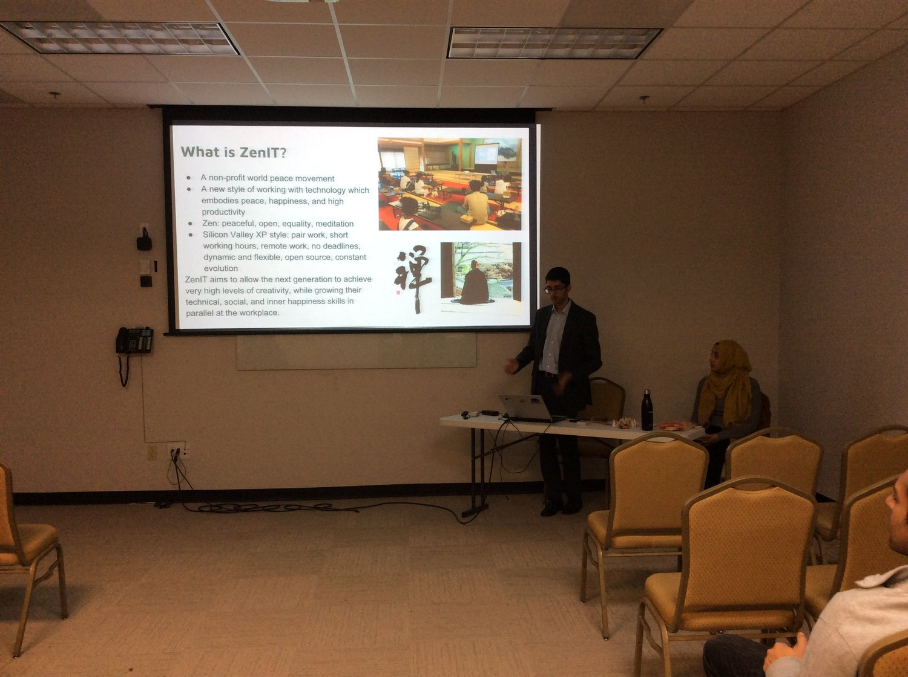

ZENIT ARCHIVE
Bring Peace to Your Work - Workshop
Nov 22, 2018
In this session, Amil Khanzada, UC Berkeley Computer Science alumnus will talk about a new movement to define a style of working that is highly productive *and* peaceful, by combining spirituality with Silicon Valley software development pairing/collaboration principles.
Co-founder, Hira Khanzada, a professional counselor and psychotherapist, will lead guided exercises on how to apply this work style to your life.
A current application of this work style, prototype name "ZenIT" is in the research and pilot phase in Japan. For more information, check out https://www.ZenIT.jp/p/about.html
We hope that from this session, you will learn some skills to make your own work more peaceful and mindful.
Date/Time
Wednesday, November 21st, 8:15-9pm
Location
Room: Aisha Hall
MCA
3003 Scott Blvd
Santa Clara, CA 95054
Contact
MCA@ZenIT.jp
Workshop Photos
Thanks to the 12 participants for their active engagement and feedback!
Recent Posts
See All
2019/12/15 ZenIT Workshop @ Tenryuuji - Blog Post
2019/04/14 ZenIT Workshop @ Eiheiji - Blog Post
University of Fukui Students Learn About the Silicon Valley and ZenIT

